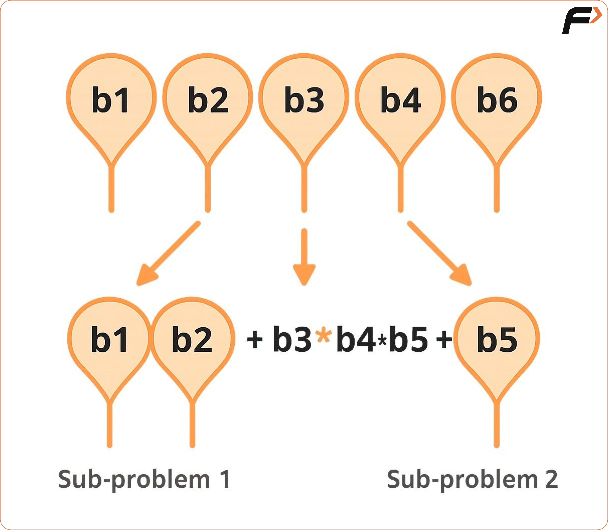
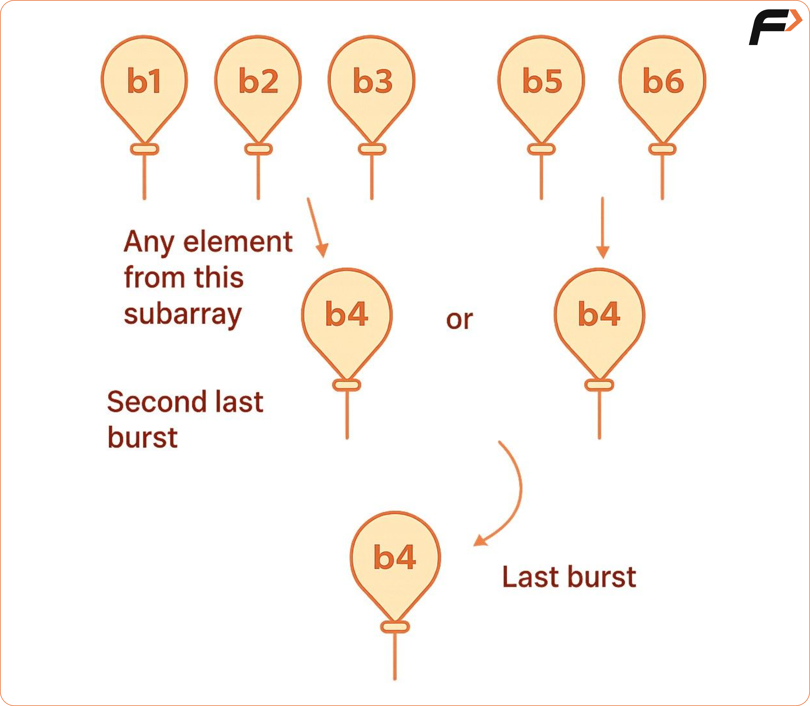
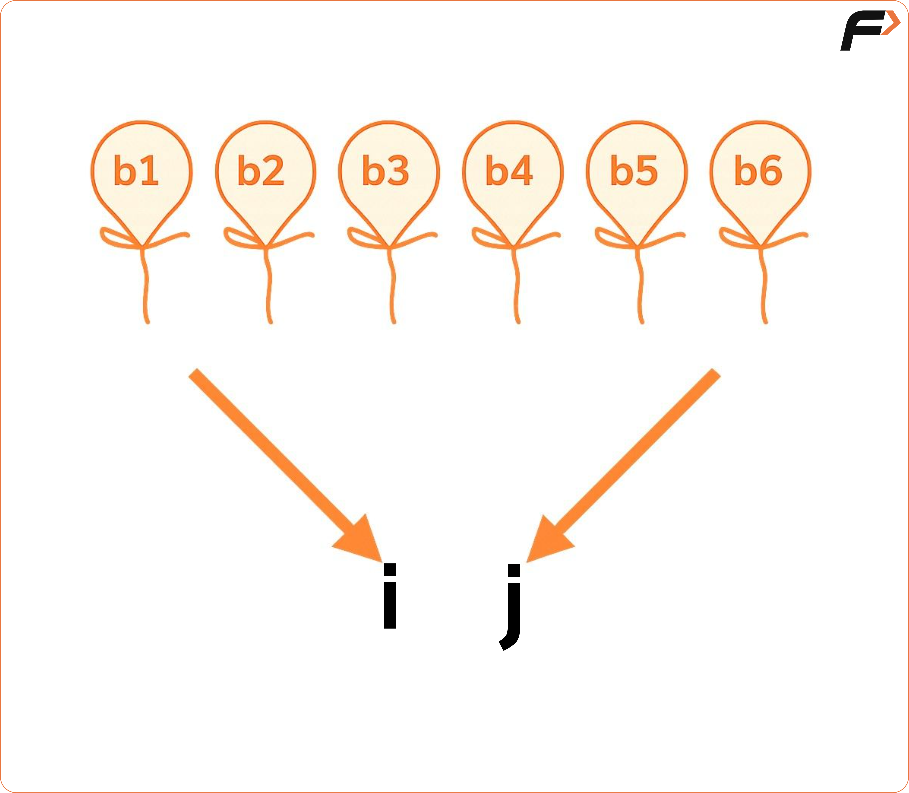

Burst Balloons | Partition DP | DP 51
Problem Statement: You are given n balloons, indexed from 0 to n - 1. Each balloon is painted with a number on it represented by an array. You are asked to burst all the balloons.
If you burst the ith balloon, you will get arr[i - 1] * arr[i] * arr[i + 1] coins. If i - 1 or i + 1 goes out of the array's bounds, then treat it as if there is a balloon with a 1 painted on it.
Return the maximum coins you can collect by bursting the balloons wisely.
Disclaimer: Here is the practice link to help you assess your knowledge better. It's highly recommend trying to solve it before looking at the solution.
Examples
Example 1:
Input: N = 4, array[] = {3, 1, 5, 8}
Output: 167
Explanation: First, we will burst the second balloon with the value 1. Coins = 3*1*5 = 15. Second, we will burst the balloon with the value 5. Coins = 3*5*8 = 120. Third, we will burst the balloon with the value 3. Coins = 1*3*8 = 24. Fourth, we will burst the balloon with the value 8. Coins = 1*8*1 = 8. So, the total number of coins we can collect is 167. This is the maximum number of coins we can collect.
Example 2:
Input: N = 2, array[] = {1, 5}
Output: 10
Explanation:
First, we will burst the second balloon with the value 1. Coins = 1*1*5 = 5. Second, we will burst the balloon with the value 5. Coins = 1*5*1 = 5. So, the total number of coins we can collect is 10. This is the maximum number of coins we can collect.

Recursive Approach
Algorithm
We must burst balloons in a specific order to collect the most coins. The order of bursting affects the total, and multiple valid sequences may exist.
Initially, we may think to choose the first balloon to burst, assuming we can solve the rest separately. But this leads to interdependency problems.
For example, bursting the middle balloon splits the array into two parts. But bursting one side may still depend on balloons from the other, making them not truly independent.

So, this approach fails as subproblems overlap and depend on each other. Instead, think in reverse: choose the last balloon to burst.
Now, if we burst a balloon last, the balloons on its left and right are fixed, allowing us to treat the left and right parts as separate subproblems.
For example, if a middle balloon is burst last, its neighbors are known, and we can solve the left and right sections independently. This eliminates overlapping dependency.

Now subproblems are truly independent. We use this structure to apply a Partition DP technique.
- Start with the whole array marked by i and j.
- Try all possible last balloons to burst within i to j.
- Calculate total coins as:
- Coins from bursting the chosen balloon (with neighbors)
- Plus coins from solving the left subarray
- Plus coins from solving the right subarray
- Track the maximum among all such combinations.
Mark the array with two pointers i and j, covering the full range of balloons.

Code
#include <bits/stdc++.h>
using namespace std;
class Solution{
// Recursive function to calculate the maximum coins obtained
int maxCoinsHelper(int i, int j, vector<int> &nums) {
if (i > j) return 0;
int maxCoins = INT_MIN;
// Iterate through each possible balloon to burst last
for (int k = i; k <= j; k++) {
// Calculate the coins obtained by bursting the k-th balloon last
int coins = nums[i - 1] * nums[k] * nums[j + 1];
// Recursively calculate the maximum coins for the remaining balloons
int remainingCoins = maxCoinsHelper(i, k - 1, nums) + maxCoinsHelper(k + 1, j, nums);
// Update the maximum coins
maxCoins = max(maxCoins, coins + remainingCoins);
}
return maxCoins;
}
// Function to calculate the maximum coins obtained
int maxCoins(vector<int> &nums) {
int n = nums.size();
// Add 1 to the beginning and end of the nums array
nums.insert(nums.begin(), 1);
nums.push_back(1);
// Call the helper function to compute the maximum coins
return maxCoinsHelper(1, n, nums);
}
int main() {
vector<int> nums = {3, 1, 5, 8};
int maxCoinsResult = maxCoins(nums);
cout << "Maximum coins obtained: " << maxCoinsResult << "\n";
return 0;
}Complexity Analysis
Memoization Approach
Algorithm
- Create a 2D array to store results for each subproblem. Its size should be one more than the array length in both dimensions (n+1 x n+1) to cover all index ranges.
- Set all values in this array to -1 to indicate uncomputed states.
- Before solving any subproblem (for example, from i to j), check if the result is already stored in the array (i.e., check if the value is not -1).
- If the value exists, return it directly instead of recomputing.
- If it doesn't exist, compute the result normally using recursion, then store it in the array before returning.
Code
#include <bits/stdc++.h>
using namespace std;
class Solution{
// Recursive function to calculate the maximum coins obtained
int maxCoinsHelper(int i, int j, vector<int> &nums, vector<vector<int>> &dp) {
if (i > j) return 0;
if (dp[i][j] != -1) return dp[i][j];
int maxCoins = INT_MIN;
// Iterate through each possible balloon to burst last
for (int k = i; k <= j; k++) {
// Calculate the coins obtained by bursting the k-th balloon last
int coins = nums[i - 1] * nums[k] * nums[j + 1];
// Recursively calculate the maximum coins for the remaining balloons
int remainingCoins = maxCoinsHelper(i, k - 1, nums, dp) + maxCoinsHelper(k + 1, j, nums, dp);
// Update the maximum coins
maxCoins = max(maxCoins, coins + remainingCoins);
}
return dp[i][j] = maxCoins;
}
// Function to calculate the maximum coins obtained
int maxCoins(vector<int> &nums) {
int n = nums.size();
// Add 1 to the beginning and end of the nums array
nums.insert(nums.begin(), 1);
nums.push_back(1);
// Create a DP array for memoization
vector<vector<int>> dp(n + 2, vector<int>(n + 2, -1));
// Call the helper function to compute the maximum coins
return maxCoinsHelper(1, n, nums, dp);
}Complexity Analysis
Time Complexity: O(N3), There are total N2 no. of states. And for each state, we are running a partitioning loop roughly for N times.
Space Complexity: O(N2) + Auxiliary stack space of O(N), N2 for the dp array we are using.
Tabulation Approach
Algorithm
- Begin by handling the situation where the starting index crosses the ending index. In this case, no balloons can be burst, so the result is zero. To account for this, initialize the entire solution table with zeros.
- In the bottom-up method, we move through the solution table from the end towards the beginning for one side of the range, and from the beginning to the end for the other side. This ensures smaller subproblems are solved before larger ones.
- Once the correct order of processing is set, reuse the same decision-making steps from the recursive method inside the nested structure, building up the solution gradually.
Code
#include <bits/stdc++.h>
using namespace std;
class Solution{
// Function to calculate the maximum coins obtained
int maxCoins(vector<int> &nums) {
int n = nums.size();
// Add 1 to the beginning and end of the nums array
nums.insert(nums.begin(), 1);
nums.push_back(1);
// Create a DP array for memoization
vector<vector<int>> dp(n + 2, vector<int>(n + 2, 0));
for (int i = n; i >= 1; i--) {
for (int j = 1; j <= n; j++) {
if (i > j) continue;
int maxi = INT_MIN;
// Iterate through each possible balloon to burst last
for (int ind = i; ind <= j; ind++) {
// Calculate the coins obtained by bursting the ind-th balloon last
int coins = nums[i - 1] * nums[ind] * nums[j + 1];
// Calculate the maximum coins for the remaining balloons
int remainingCoins = dp[i][ind - 1] + dp[ind + 1][j];
// Update the maximum coins
maxi = max(maxi, coins + remainingCoins);
}
dp[i][j] = maxi;
}
}
return dp[1][n];
}
int main() {
vector<int> nums = {3, 1, 5, 8};
int maxCoinsResult = maxCoins(nums);
cout << "Maximum coins obtained: " << maxCoinsResult << "\n";
return 0;
}Complexity Analysis
Time Complexity: O(N3), There are total N2 no. of states. And for each state, we are running a partitioning loop roughly for N times.
Space Complexity: O(N2), N2 for the dp array we are using.